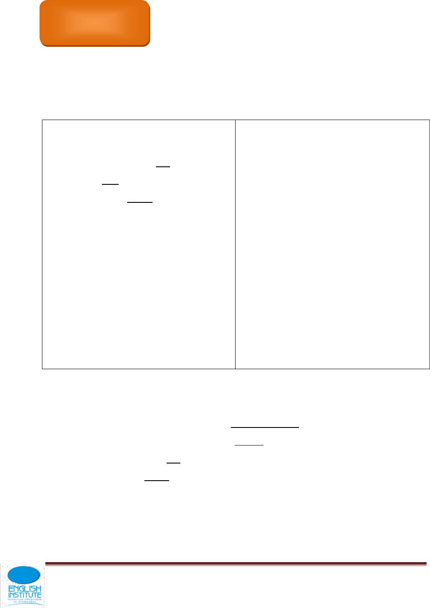
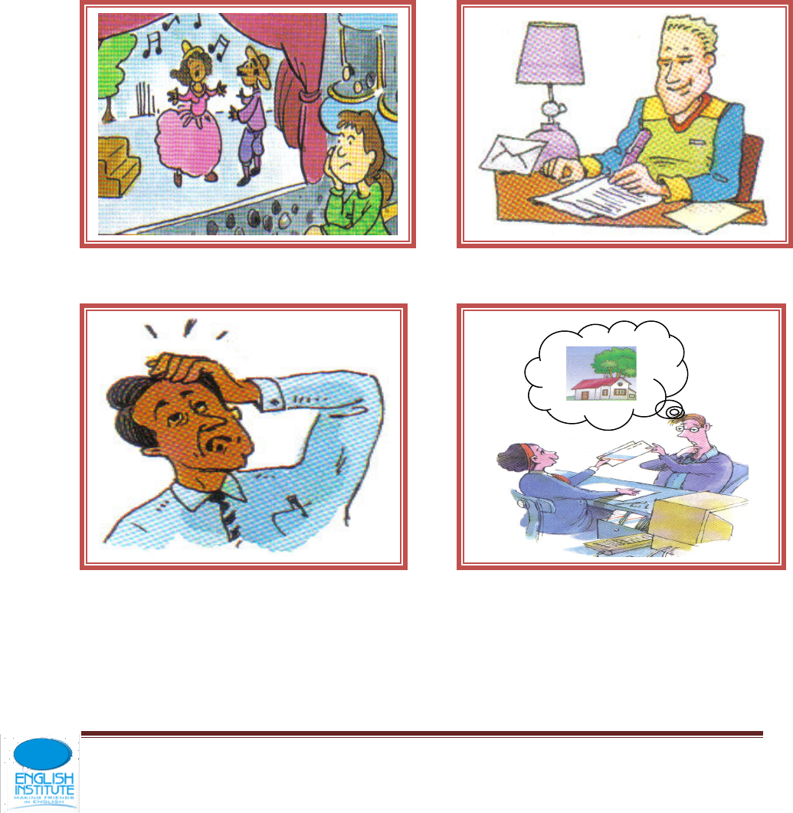

FUTURE PROGRESSIVE
2
MAY-MIGHT
7
GETTING SOMEWHERE
14
REVIEW ON OBJECT PRONOUNS POSSESIVE
ADJETIVES AND POSSESSIVE PRONOUNS
19
IMPERATIVE
24
HABITUAL PAST
29
PRESENT PERFECT
33
ALREADY – YET
40
FOR SINCE
63
CONTENTS
Página 2
F
.
L
FUTURE PROGRESSIVE
VOCABULARY
UNIT 1
3
2
1
5
6
4
9
8
7
12
11
10

Página 3
F
.
L
Flirt
Rearrange furniture
Chat on line
Mop
Visit friends
Have a meeting
Drink a beer
Send a letter
Wait for a call
Clean the mess
Make up your mind
Name
Vocabulary practice
Ask at each other:
Number 1, what will he be doing?
He´ll be flirting at work.
Number 2, what will they be doing?
They´ll be __________________
Continue with the resto of the vocabulary.
GRAMMAR FLASH
Future progressive
subject
Auxiliary
Verb+ing
I
He, she, it
You, we, they
Will be
Am going to be
Eating, cooking,
Dancing…
DRILLS
Teacher Students
I will be studying . . . I will be studying.
You . . . you will be studying.
We . . . _______________________________________
They . . . _______________________________________
Question . . . _______________________________________
Negative . . . _______________________________________
Affirmative . . . _______________________________________
Dancing in the house . . . _______________________________________
CHAT TIME

Página 4
F
.
L
A. Will you be home this evening?
B. Yes, I will, I’ll be cooking dinner
A. O.K., then I´ll go visit you.
B. Sure, you can come over.
I’ll be waiting for you.
A. Will you be home this afternoon?
B. No, I won’t. I’ll be visiting my girlfriend.
A. O.K. then I won’t go visit you.
B. But I’ll be home tomorrow afternoon.
A. All right, see you then.
(Pay bills at bank)
________________________________________
________________________________________
________________________________________
________________________________________
(Have a meeting at the office)
________________________________________
________________________________________
________________________________________
________________________________________
(Clean out the garage)
_______________________________________
_______________________________________
_______________________________________
Página 5
F
.
L
ORAL PRACTICE
PRACTICE WITH A CLASSMATE THE FOLLOWING DIALOGUE.
A. Do you think it’ll rain this weekend?
B. I don’t know, Maybe it will and Maybe
It won’t. We´ll just have to wait and see.
READING
Do you think
Mario will get
married soon?
Do you think
the weather
will be better?
Do you think
you´ll come to
class tomorrow?
Do you think
you´ll have your
driver´s license
soon?

Página 6
F
.
L
Who are they? What will they be doing?
What will be happening?
Brad likes to fish. He fishes whenever he can. This weekend, he will be
fishing at the lake. It is his favorite place to fish.
Mark is Brad's friend. Mark likes to fish too. He also fishes whenever he
can. This weekend he will be fishing at the lake with Brad. They will be
camping at the lake all weekend.
Mark will be picking up Brad at 8 o'clock Friday night. Brad will be ready
when Mark arrives. They will be driving all night before they get to the
lake.
They are excited about the weekend. Brad and Mark both love to fish.
They love to fish together. They will be fishing together for many years!
A. Answer the following questions. Use the Future Progressive
tense.
1. Where will Brad be fishing this weekend? ____________________
Who will be fishing with Brad? ____________________________
2. What else will Brad and Mark be doing at the lake? ____________
When will Brad be picking up Mark? ________________________
3. How long will Brad and Mark be driving before they get to the
lake? _______________________________________________
Página 7
F
.
L
HOMEWORK
Rewrite the following sentences as negative sentences, yes/no
questions, WH-questions (using the underlined word or phrase)
and tag questions.
Example “He will be waiting for you.”
Negative: He will not be waiting for you.
Yes/No Question: Will he be waiting for you?
WH-Question: Whom will he be waiting for?
Tag Question: He will be waiting for you, won't he?
1. This weekend he will be fishing at the lake with Brad.
Negative:
Yes/No Question:
WH-Question:
Tag Question:
2. They will be driving all night.
Negative:
Yes/No Question:
WH-Question:
Tag Question:
3. They will be fishing together for many years!
Negative:
Yes/No Question:
WH-Question:
Tag Question:
Rewrite the story using contractions.
UNIT 2
Página 8
F
.
L
MAY - MIGHT
VOCABULARY
1. Call
2. Name
3. Grow up
4. Get to school
5. Buy
6. Learn how to drive
7. Learn how to dance
8. Wash your clothes
9. Pay bills
GRAMMAR FLASH
1
2
4
5
6
7
8
9
3

Página 9
F
.
L
May
“May” is used to express permission or possibility. The negative of
may is “may not”.
Example: I may become a doctor.
In this example “may” is used to express the possibility of me
becoming a doctor in the future.
Example: May I have a glass of water?
In this example “may” is used to ask permission to have a glass of
water.
Might
“Might” is used to express possibility. It differs from “may” in that the
possibility it expresses is usually smaller. The negative of might is
“might not”.
Example: I might become a doctor when I grow up, but I doubt it.
In this example “might” is used to express the small possibility that I
will become a doctor when I grow up.
Circle the correct auxiliary modal verb in each sentence.
1) When I grow up, I (may, might) become an engineer.
2) There is a small chance the we (may, might) go to the beach this
weekend.
3) There is a good change that we (might, may) have to postpone the
meeting.
4) Billy and I (may, might) cook dinner tonight.
5) The airplane (might, may) crash.
6) You never know, I (may, might) become president one day.
7) (May, Might) I have a piece of bread please?
8) It (might, may) snow tonight, but I doubt it.
Página 10
F
.
L
9) If Jane studied harder, she (might, may) have gotten a better grade
on the test.
10) I (might, may) not be coming to your party tonight. I told my
mother that I would stay home and make cookies with her already. I’m
sorry.
ORAL PRACTICE
LOOK AT THE PICTURES FROM THE VOCABULARY SECTION AND CREATE DIALOGUES LIKE THESE.
A. When are you going to call her?
B. I might call her today, or
I might call her next week
I don’t know yet
A. Well, just let me know.
A. What are you going to name your puppy?
A. What are you going to be when
you grow up?
A. Where are you going to go for your next
vacation?
MOVE ON
* You use may for “questions” when asking for a permission or granting one.
Página 11
F
.
L
A. May I go to the bathroom?
B. Yes, you may.
You can also use “may, could and can”
to make polite questions for
permissions or petitions.
TAKE A LOOK
Complete the dialogues by using May I, Can I, or Could I and write some typical
responses.
May I come in?
Teacher, can I bring the homework tomorrow?
Can I have sugar please?
May I have an apple?
Yes, of course
Of - course
Certainly
Sure
No problem
TRY THIS
Ask and answer polite questions using May I, Can I, or Could I.
Página 12
F
.
L
Example: ( s o m e o n e ) has a pencil. You want to borrow it.
STUDENT A: (...), may I (please) borrow your pencil?
STUDENTB: Certainly. Here it is.
STUDENT A: Thank you.
ORAL PRACTICE
Role play the following questions with your classmates.
1. ( . . . ) has a dictionary. You want to borrow it.
2. ( . . . ) has a pen. You want to use it for a minute.
3. ( . . . ) has an eraser. You want to use it for a minute.
4. ( . . . ) has a pencil sharpener. You want to borrow it.
5. ( . . . ) has a book. You want to see it.
6. ( . . . ) has a dictionary. You want to see it.
7. You are at friend's home. You want to use the phone.
8. You are at your friend´s home. You want a glass of water.
9. You are at a restaurant. You want to have a cup of coffee.
10.S h e is a waitress. You want to have the check.
QUESTIONS ABOUT YOU MIGHT (possibility)
PAIR WORK.
Answer the questions about you. Use ‘might’ in your answers.
Share your answers with a classmate.
1. What might you do after class?
_________________________________________________________
2. What time might you get out of bed next Saturday?
_________________________________________________________
Página 13
F
.
L
3. Where might you live in ten years?
_________________________________________________________
4. What might you do next weekend?
_________________________________________________________
5. When might you get a (new) job?
_________________________________________________________
6. When might you get married?
_________________________________________________________
7. What might you dream about tonight?
_________________________________________________________
8. How much money might you spend next week?
HOMEWORK
COULD YOU…? REQUESTS
(A) I’m going to the supermarket.
(B) Could you please buy some milk?
(A) Sure, no problem!
‘Could you…?’ is used as a polite way to ask for something.
Complete the conversations below by making polite requests.
1. (A) I’m going to Starbucks.
(B) ____________________________________________________
2. (A) I’m going to the library.
(B) ______________________________________________________
3. (A) I’m going to our English class.
(B) ______________________________________________________
4. (A) I’m going to the kitchen.
(B) ______________________________________________________
5. (A) I’m going to London.
(B) ______________________________________________________
6. (A) I’m going to the vegetable market.
(B) ______________________________________________________
7. (A) I’m going to McDonald’s.
(B) _____________________________________________________
8. (A) I’m going to the post office.
(B) ______________________________________________________
MAY and MIGHT (possibility)
Complete these eighteen sentences by choosing the best answers.
1.My family and I … travel to
Montreal next summer.
A) might
10. I think that you … wrong. I think
the meeting is tomorrow, not today.
a) may
Página 14
F
.
L
B) might be
2. John isn’t in class today. I
think
he … sick.
a) might
b) might be
3. I … at work tomorrow
morning
because I have a bad cold.
a) may be
b) may not be
4. We … have a grammar
exam next week. Let’s study!
a) may
b) may be
5. There’s no sound coming
from
the radio. It … broken.
a) might
b) might be
6. I … late today because I
may
have some extra work to do.
a) may not
b) may be
7. Many scientists think that
there… life on other planets.
a) may
b) may be
8. This bag … your bag. I
can’t see your name on it.
a) might be
b) might not be
9. I don’t know what kind of
insect
a) might
b) might be
b) may be
11. It … rain later today, so I’m going
to
take my umbrella.
a) might
b) might not
12. Hurry! Let’s get to the store before
it closes. It … open after six.
a) might be
b) might not be
13. Oh, no! The airplane … be delayed
because of the bad weather.
a) may
b) may not
14. I’m not sure who she is. She … our
new teacher.
a) may be
b) may not
15. There … cookies inside this box!
Let’s open it and find out!
a) might be
b) might not
16. No, calling Mr. Smith at two o’clock
in the morning … a good idea.
a) might be
b) might not be
17. I don’t feel well. I … have to see a
doctor.
a) might
b) might be
18. (A) What is the capital city of
Spain?
this is. It … some kind of ant. (B) I’m
not sure but it … Madrid.
a) might
b) might be
MATCH THE SENTENCES WITH THE CORRECT PICTURES
Página 15
F
.
L
_1_
__
__
__
__
__
__
__
__
__
1.Take an umbrella with you when you go out. It’s raining.
2. I couldn’t sleep last night because it was so stormy. It was really
scary.
3 Now that the spring is here, it’s getting warm.
4 It’s sunny today. Let’s go to the beach!
5 The weather is really depressing today. It’s just grey and cloudy.
6 I love it when it snows. I like the way everything gets covered in
white.
7 It was so windy that I couldn’t even stand up!
8 It’s very cold today. You’ll need a jacket.
9 I can’t see more than ten metres because it’s so foggy.
10 It’s too hot today. I’m going to go inside for a cold drink.
Choose the correct option to complete the sentences.
1 We use may, might and will to talk about things that are possible in …
a) the present or the future. b) the past.
2 We use may or might when we are …
a) not very certain. b) very certain.
3 We use probably will when we are …
a) quite certain. b) not very certain.
4 We use will or definitely will when we are …
a) quite certain. b) very certain.
READING
Underline the phrases that talk about future possibility in the email.
Which form of the verb follows may, might and will?
Hi Greg!

Página 16
F
.
L
I’m writing about the plans for your visit this weekend. We’ve planned
lots of activities but it all depends on the weather. We may go up to the
mountains to show you some of the local area, so bring your walking
shoes, just in case! It might be a bit windy, possibly, but it probably
won’t rain. We’ve had some really good weather recently so it will
probably be really sunny. But you never know in the UK, do you? I
might not have to work on Friday when you arrive. I don’t know yet. But
I’ll see you in the evening, in any case. And Jill will definitely meet you
at the train station, so don’t worry!
See you soon!
PRACTISE
Complete these sentences with may, might, will or won’t you will
need to find out where each one should go.
More than one answer might be possible.
1 I don’t know, but the biggest island in Europe be Britain.
2 I think I definitely go for a walk this weekend.
3 They probably be here tomorrow.
4 I definitely have time to see you this evening, but we can meet
tomorrow.
5 They haven’t decided, but they go to the beach on Monday.
6 I’m not sure, but Ben go fishing on the river this weekend.
7 I probably be able to go on holiday with you because I have too much
work.
8 The letter arrive today. I only posted it this morning.
Quickly read this article, ignoring any words or phrases you
don’t know. Then read the sentences and choose T (true) or F
(false).
What is climate change?
The word ‘climate’ means the average weather conditions over a
number of years, including temperature, wind and rainfall. When we talk
about climate change, we mean the unusual changes in the Earth’s
weather patterns that have happened over the last 100 years.
It is true that the weather is always changing and sometimes the
weather changes in ways we really don’t expect. For example, we might
have a warm sunny day in the middle of winter or a cold windy day in

Página 17
F
.
L
the middle of summer. Recording the temperatures of each day helps us
find the average temperature for the whole year. Doing this in many
different parts of the world lets us find the average global temperature.
When all temperatures are taken together, we would expect any ups
and downs in the year to cancel each other out and the average
temperature to stay roughly the same from one year to the next.
However, scientists have found that the temperature is not staying the
same and our planet is actually getting warmer each year. This is
called ‘global warming’ and it is a major part of climate change.
Extreme changes in climate are nothing new on Earth. In its long
history, there have been times when the Earth’s climate became
warmer, causing ice to melt and sea levels to rise so that much
more of our planet was covered in water. At other times the Earth has
been very cold; these ‘ice ages’ saw huge areas of the planet covered in
snow and ice. These might sound like drastic changes in the Earth’s
climate, but they happened very gradually over thousands of years.
Choose the correct answer true or false.
1 When people talk about climate change, they usually mean changes in
the last century. T / F
2 The way the weather changes every day is the same as climate
change. T / F
3 In the past, the Earth got very cold. T / F
Read the article again. Find and underline these words and phrases.
For each one, look at the context where it appears carefully and choose
the correct meaning.
1 expect a) think will happen b) think is unusual
2 cancel out a) stop something from having an effect b) make
something smaller
3 roughly a) exactly b) approximately
4 major a) important b) unimportant
5 melt a) become ice b) become water
Página 18
F
.
L
GETTING SOMEWHERE
VOCABULARY
1. Get to
2. Turn left
3. Turn right
4. Go straight a head
5. See
6. Get down
7. Get on
8. Take
9. Walk
UNIT 3
1
9
8
7
6
5
4
3
2
Página 19
F
.
L
10. Drive
11. Go back
12. Turn around
13. Make a “U” turn
14. Pass
15. Get off
GRAMMAR FLASH
Asking politely for Direction
DRILLS
Can you please
Could you please tell me …
Would you please
10
11
12
13
14
15
Página 20
F
.
L
Teacher Students
Can you please tell me how to get to the mall?
Could . . . _______________________
Would . . . _______________________
Teacher gives the students direction and they act them out:
Get up
Walk to the board
Turn around
Turn left
Go back
Go straight
Back to your chair
Turn right
Take a look at the following traffic sign.
CHAT TIME
Página 21
F
.
L
A. Excuse me, could you please tell me how to get to the Hotel from the gas
station?
B. Sure, get to Elm street and turn right walk down Elm Street to Ninth Avenue
and turn left, walk along nine avenue and you’ll see the hotel on the left across
from the parking garage and next to the shopping mall.
1. Excuse me, can you please tell me how to get to the zoo from the toy store?
2. Excuse me, would you please tell me how to get to the department store from
the motel?
3. To the park / from the concert hall
4. To the bus station / from the clinic
5. To the restaurant / from the book store
6. To the pet shop / from the shopping mall.
7, To the zoo / from the bus station
8. To the hospital / from the courthouse
Página 22
F
.
L
A. Pardon-me. Could you please tell me, what’s the fastest way to get to the show
store from the city courthouse?
B. Certainly; take the pine st. bus and get off on River Street, walk down River st.
two blocks and you’ll see the shoe store on the left next to the police station
and across from the church.
A. Thanks a lot.
B. Don’t mentioned / my pleasure / you’re welcome / no problem / it’s all-right.
1. To the state street clinic / from the zoo.
2. To the save-Rite Supermarket / from the shopping mall.
3. To the church / from the chen’s Chinese Restaurant.
4. To river street garage from the concert hall.
5. To the state street cinema from the concert hall.
6. To the fire station from the city bus station.
Página 23
F
.
L
CAFE
RAILWAY
STATION
CINEMA
TAXI
RANK
SHOE
SHOP
BANK
COFFEE
SHOP
BOOK
SHOP
PARK
Ask your partner for directions to:
a. the pet shop
b. the pub
c. the school
d. the zoo
e. the hotel
f. the town hall
g. the post office
h. the gym
j. the library
Mark the location of each place on your map.
Useful language
Excuse me, where's the...?
How do I get to...?
Go straight...
Turn left/right at the junction/traffic lights
Go past…
Go over the junction… Walk/Go
along the road until… The… is on
your left/right.
It's opposite…
It's next to…
It's in between… and…
Página 24
F
.
L
WHAT IS THE POLICEMAN SAYING?
____________________ _________________ ______________
__________________ __________________ _______________
_________________ _________________ _______________
Página 25
F
.
L
GET TO MONICA´S HOUSE
1. James leaves the school and
turns right / left .
2.He walks along Lake Street / Queen
Street .
3.He takes the second the first
turning on the left / on the right .
4.Then he goes straight on /
turns left .
5.He goes past / goes as far as
Station Road.
6.Monika lives in Park Street /
Station Road .
7.Her house is opposite / next
to the cinema, behind / near the supermarket.
Auckland
Auckland is a city in New Zealand. It is
on the North Island and it is surrounded
by many lakes and volcanoes. It is between
the Tasman Sea and the Pacific Ocean.
About 1.4 million people live there. The ocean influences the climate of
Auckland. The summers are warm, with average temperatures of about
23˚C in January and February. Winters are cloudy and wet. Auckland
began life in 1840 and has grown into a large modern city. It has a
relaxed lifestyle, with many people enjoying sailing. There are lots of
interesting shopping areas, plus cafes, restaurants and clubs. The main
attractions in Auckland include the two large harbours, Auckland Domain
(a large park) and the beaches
Number these things from 1–6, according to the order that they appear
in the description. • main attractions___ • population___ • what it’s
known for____ • geography____ • climate_____ • history ____
HOMEWORK
Make notes about a place you know well
Name of place: Type of place (town, city, etc): Population: Where is it
and what is the geography of the area? What is the population? What is
the climate like? What do you know about the history of the place? What
is it known for? What are the main attractions?

Página 26
F
.
L
REVIEW ON OBJECT PRONOUNS, POSSESSIVE ADJECTIVES,
AND POSSESSIVE PRONOUNS
TRY THESE ACTIVITIES
Complete the sentences. Use OBJECT PRONOUNS, POSSESSIVE
ADJECTIVES, and POSSESSIVE PRONOUNS.
1. I own this book
This book belongs to __me___
This is ____ my _____ book
This book is ____mine ______
2. They own these books
These books belong to _____________
These are __________________ books
These books are __________________
3. You own that book
That book belongs to ______________
That is _____________________ book.
That book is _____________________
4. She owns this pen
This pen belongs to ________________
This is ______________________ pen.
This pen is _______________________
5. He owns that pen
That pen belongs to ________________
That is ______________________ pen.
That pen is ______________________
6. We own those books
Those books belong to _____________
Those are __________________ books
Those books are __________________
Complete the sentences. Use the correct possessive form of the words in
italics.
1. (I) a. This book bag is _____mine________
(Sue) b. That book bag is ______ Sue’s_______
(I) c. ________My__________ book bag is red.
(She) d. ____Hers _____________ is green.
2. we a. These books are ______________
they b. Those books are _____________
UNIT 4

Página 27
F
.
L
we c. _________________ books are on the table.
they d. __________________ are on the desk.
3. Tom a. This raincoat is _____________________________
Mary b. That raincoat is ____________________________
He c. __________________________ is light brown.
She d. __________________________ is light blue.
4. I a. This notebook is ________________________
You b. That one is ____________________________
I c. _____________________ has ________________ name on it.
You d. _____________________ has ___________________ name on it.
5. Jim a. _____________________________ apartment is on Pine Street.
We b. _____________________________ is on Main Street.
He c. _____________________________ apartment has three rooms.
We d. _____________________________ has four rooms.
6. I a. This is ______________________________ pen.
You b. That one is _____________________________
I c. ____________________is on ______________________pocket
You d. ____________________ is on ______________________ desk.
7. We a. ___________________________ car is a Chevrolet
They b. ___________________________ is a Volkswagen.
We c. ___________________________ gets 17 miles to the gallon.
They d. ___________________________ car gets 30 miles to the gallon.
8. Ann a. These books are ___________________________
Paul b. Those are ______________________________
She c. ________________________ are on __________________ desk
He d. ________________________ are on ___________________desk
Choose the correct completion.
Página 28
F
.
L
1. Is this _______your __________ pen?
(your / yours)
2. Please give this dictionary to Olga. It’s __________________________
(her / hers)
3. A: Don’t forget _____________________ hat. Here.
B: No, that’s not __________________ hat. ___________________ is green.
(my / mine) (My / Mine)
4. A: Please take this wood carving as a gift from me. Here. It’s ______________
(your / yours)
5. A: Isn’t that the Smiths’ car? That one over there. The blue one.
B: No, that’s not __________________. _________________ car is dark blue.
(their / theirs) (their / theirs)
6. A: Jim and I really like ________________________ new apartment. It has
(our/ours)
lots of space. How do You like _____________________________________?
(Your / yours)
B: _________________________ is small, but it’s comfortable.
(Our / Ours)
7. A: Excuse me. Is this _________________________ umbrella?
(Your/ yours)
B: I don’t have an umbrella. Ask Ken. Perhaps it is ______________________
(him/his)
8. A: When do ___________________________ classes begin?
(your/yours)
B: September second. How about ________________________? When do
( your / yours)
_____________________________ begin?
(your / yours)
A: _______________________________ begin August twenty – ninth.
(My / Mine)
9. A: Maria, ___________________________ spaghetti sauce is delicious!
(your/yours)
B: Thank you, but it’s not as good as ______________________________
(your/yours)
A: Oh, no. ________________ is much better! It tastes just as good as Anna’s.
(your / yours)
B: Do you like Anna’s spaghetti sauce? I think _________________ is too salty.
Página 29
F
.
L
(her/hers)
A: Maybe. ____________________ husband makes good spaghetti sauce too.
__________________________ is thick and rich.
(His/He)
B: In truth, making spaghetti sauce is easy, but everyone’s sauce is just a little
different.
Choose the correct completion.
1. Whose watch __________is________ ________this______________?
(is/are) (this/these)
2. Whose glasses _______________ ____________________________?
(is / are) (that/those)
3. Whose keys ___________________ ___________________________?
(is/are) (that/these)
4. Whose hat ___________________ ____________________________?
(is/are) (that/those)
5. Whose shoes ___________________ __________________________?
(is/are) (that/those)
6. Whose handbag ___________________ _______________________?
(is/are) (this/these)
Pronoun review. Find and correct the errors in pronoun usage.
Dear Heidi,
my
(1) Everything is going fine. A like mine new apartment very much. Its large and
(2) comfortable. I like me roommate too. Him name is Alberto. You will meet them
(3) when your visit I next month. His from Colombia. His studying English too. We’re
(4) classmates. We were classmates last semester too.
(5) We share the rent and the utility bills, but us don't share the telephone bill.
Página 30
F
.
L
(6) He pays for his's calls and my pay for my. He's telephone bill is very high because
(7) he has a girlfriend in Colombia. He calls she often. Sometimes her calls he. Them
(8) talk on the phone a lot.
(9) Ours neighbors are Mr. and Mrs. Black. Their very nice. We talk to it often.
(10) Ours apartment is next to their. Theirs have a three-year-old* daughter. Shes
(11) really cute. Hers name is Joy. Them also have a cat. Its black and white. Its eyes
(12) are yellow. Its name is Whiskers. Its a friendly cat. Sometimes they're cat leaves a
(13) dead mouse outside ours door.
(14) l'am looking forward to you're visit. Love, Carl
IMPERATIVE
VOCABULARY
UNIT 5
1
2
3
4
Página 31
F
.
L
1. Stand there
2. Watch your step
3. Touch those wires
4. Put on your safety
5. Move out of there
6. Eat your food
7. Buy an ice-cream
8. Take me to the
movies
9. Stay with me
10. Play with matches
GRAMMAR FLASH
Imperative
It is always used to the second person,
but it isn’t necessary to use “you” as an
order or a petition or a warning
You come to the board
You don’t smoke in class
You invite me out
5
10
9
7
6
8
Página 32
F
.
L
CHAT TIME
Be careful, put on your safety glasses
I couldn’t hear you, what did you say?
Put on your safety glasses, you might get hurt
1. Don’t stand there / get hit 2. Watch your step / slip and fall
3. Don’t touch those wires / get a shock 4. Move out of there / get hurt
5. Don’t play with matches / burn yourself
Página 33
F
.
L
A. Come on, buy me an ice cream
B. I’m sorry, I can’t. I don’t have money but I
Will buy you an ice-cream tomorrow.
1. Take me to the movies 2. Stay with me
3. Eat your food
TRY THIS
What are they saying?
Página 34
F
.
L
1. _______________________________
2.___________________________
3.___________________________
4. _________________________
Página 35
F
.
L
VOCABULARY
1. Town /city
2. Coke / Whiskey
3. Cheap cloth / expensive
cloth
4. New car / old car
5. Poor / rich
6. Shy / out going
7. Kate / Sandra
8. Small / big
GRAMMAR FLASH
UNIT 6
HABITUAL PAST
1
2
3
4
5
6
7
8
Página 36
F
.
L
“Used to”
DRILLS
Teacher Students
I used to live in Miami . . . I used to live in Miami
She . . . _______________________________________
They . . . _______________________________________
In New York . . . _______________________________________
But not anymore . . . _______________________________________
We . . . _______________________________________
Study on Saturdays . . . _______________________________________
CHAT TIME
A. Where did you use to live?
B. I used to live in a town but not anymore, now I live in a city.
1. what did you use to drive? 2. Who did you use to date?
I
you
She
He used to ride a toy horse
It but not any-more
You
We
They
Página 37
F
.
L
3. How did you use to be? 4. What kind of clothe did use to buy?
5. How did your dog use to be? 6. How did you use to be?
7. What did you use to drink? 8. What did you use to do?
Página 38
F
.
L
PRESENT PERFECT
VOCABULARY
1.
2.
3.
4.
5.
6.
7.
8.
9.
10.
11.
12.
13.
14.
15.
GRAMMAR FLASH
Read
Swim
Write
Do exercise
Go out
Eat shirms
Drink beer
Ride hourses
Take the kids to
the zoo
Wake up late
Sing
Teach
Wear jeans
Run
Fly kites
UNIT 7
Página 39
F
.
L
Present perfect
DRILLS
verbs
now
everyday
yesterday
From the past to
the present
Read-read-read
I am Reading a book
now
I read a book
everyday
I read a book
yesterday
I have read that
book before
Swim-swan-
swum
I am swimming now
I swim everday
I swam yesterday
I have swum there
before
Eat-ate-eaten
Do-did-done
Ride-rode-
ridden
Drink-drank-
drunk
Wake -woke-
woken
Run-ran-run
Sing-sang-sung
Teach-taught-
taught
Fly-flew-flown
CHAT TIME
I
You
We have
They
She
He has
It
BEEN in Miami
Principal verb past participle
Página 40
F
.
L
A. Do you like to swim?
B. Yes, I do. But I haven’t swum in a long time
A. Why not?
B. I just haven’t had the time.
1. __Do you like to run?__________ 2. ___________________________
_______________________________ ___________________________
_______________________________ ___________________________
_______________________________ ___________________________
3. _____________________________ 4. ___________________________
_______________________________ ___________________________
_______________________________ ___________________________
_______________________________ ___________________________
Página 41
F
.
L
5. _____________________________ 6. ________________________
_______________________________ ___________________________
_______________________________ ___________________________
7. _____________________________ 8. ___________________________
_______________________________ ___________________________
_______________________________ ___________________________
_______________________________ ___________________________
A. Have you gone out lately?
B. Yes, I have.
A. Have you ridden a horse lately?
B. No, I haven’t
A. What have you done?
B. I’ve gone out lately
Página 42
F
.
L
1. Has he sung recently? 2. Have they flown a kite lately?
Yes, _________________________ Yes, _________________________
____________________________? _________________________?
No, ________________________ No, ________________________
What has he done? ________ What _________?_
______________________________ ___________________________
3. Has he taken the kids to the zoo recently? 4. Have you read the book yet?
______________________________ ___________________________
______________________________ ___________________________
______________________________ ___________________________
______________________________ ___________________________
______________________________ ___________________________
Página 43
F
.
L
TRY THIS
A. What have they just done? Write nine sentences. Use the present perfect of
these verbs:
Break wash comb cut eat
finish get up have make write
B. Before and after
Página 44
F
.
L
Nick’s room yesterday Nick’s room today
use:
close empty hang up make
put tidy water
Write about:
his books He has put his books on the shelf
1. his trousers ________________________________________________________
2. the water – paper basket ______________________________________________
3. his bed ____________________________________________________________
4. his cassettes _______________________________________________________
5. his jacket __________________________________________________________
6. his schoolbag ______________________________________________________
7. the drawers ________________________________________________________
8. his desk ___________________________________________________________
9. his shoes __________________________________________________________
10.the plant __________________________________________________________
11.his comics _________________________________________________________
12.his guitar __________________________________________________________
Página 45
F
.
L
UNIT 8
ALREADY - YET
VOCABULARY
1.
2.
3.
4.
5.
6.
7.
8.
9.
Have breackfast
Have lunch
Make the bed
Have a bath
Do English homework
Clean your teeth
Have supper
See
Hear
10.
Comb
UNIT 8
Página 46
F
.
L
( + )
Have you gone to there? Yes, I’ve already gone there
( - )
No, I haven’t gone there yet
GRAMMAR FLASH
Already - yet
DRILLS
Teacher Students
She’s already gone there . . . She’s already gone there
(Negative) . . . __________________________________
We . . . __________________________________
Affirmative . . . __________________________________
Question . . . __________________________________
You . . . __________________________________
They . . . __________________________________
Answer negative . . . __________________________________
Taken a shower . . . __________________________________
Affirmative . . . __________________________________
Question . . . __________________________________
You . . . __________________________________
Negative . . . __________________________________
Página 47
F
.
L
CHAT TIME
Have you done these things today? Answer already (+) or yet (-)
A. Have you had breakfast?
B. Yes, I’ve already had breakfast
A. What else have you done?
B. I’ve also taken a shower.
1. Have you comb your hair yet? 2. Have lunch
3. Make the bed 4. Have a bath
5. Do English homework 6. Clean your teeth
MOVE ON
Página 48
F
.
L
A. Have you ever gone to Miami?
B. Yes, I have, It was beautiful.
B. No, I haven’t, but I would like to.
1. Have you ever been to Cartagena? 2. Have you ever traveled on a
cruise?
3. Have you ever drunk tequila? 4. Have you ever gone to the
Pacific Ocean?
5. Have you ever eaten Sushi? 6. Have you ever met a movie
star?
Página 49
F
.
L
FOR - SINCE
VOCABULARY
1. Know each other
2. Be here
3. Wait for me
4. Work on the guides
5. Have a headache
7. Be awake
8. Know how to write
6. Own your own
house
GRAMMAR FLASH
UNIT 9
1
8
7
6
5
4
2
3
Página 50
F
.
L
Asking for I
Quantity of time you
(for) how long have we
They Lived here (for) ?
she
has he
it
Quantity of time
I have lived here for 3 years
Beginning of the time
I have lived here since 2001
For – Since
DRILLS
Teacher Students
I’ve known her for 8 years . . . I’ve known her for 8 year
(1996) . . . __________________________________
Lived here . . . __________________________________
Own my own house . . . __________________________________
(be awake) (3 hours) . . . __________________________________
She . . . __________________________________
They . . . __________________________________
We . . . __________________________________
Página 51
F
.
L
Know each other . . . __________________________________
1999 . . . __________________________________
Be in this school . . . __________________________________
Question . . . __________________________________
You . . . __________________________________
She . . . __________________________________
Answer 2 years . . . __________________________________
Since I was 8 years old . . . __________________________________
CHAT TIME
Diego: Fabian;how long have you worked on these books?
Fabian: I’ve worked on them for 4 months now.
Diego: That’s a lot of time.
Fabian: It sure is.
Diego: I hope it’s worthy.
Fabian: I hope so, too
A.E.S

Página 52
F
.
L
1. How long have you known each other? 2. Be here
3. Wait for me 4. Work on the project
5. Have a headache 6. Own your own house
TRY THIS
Página 53
F
.
L
A. Complete the sentences with since or for.
1. I came to this city six months ago. I am still here. I have been in this city _for___
six months.
2. Kim has been in this city___since January.
3. It's now two o'clock. Carmen has been in class ____________ one o'clock.
4. Carmen has been in class ___________ an hour.
5. Erica has been a teacher ____________ 1994.
6. Mr. Gow has been a plumber ____________ 20 years.
7. My parents are visiting me this week. They have been here ________ five days.
8. They have been here ____________ last Saturday.
9. India has been an independent nation ____________ 1947.
10. I have been awake ____________ six o'clock this morning.
11. My friend is very ill. She has been in the hospital ____________ four days.
12. I hope the weather gets warmer soon. It's been cold and rainy _____two weeks.
B. Complete the sentences with the words in parentheses. Use the
PRESENT PERFECT or the SIMPLE PAST.
1. Maria got some bad news last week. She (be) has been_ sad since she (get)
_got___the bad news.
2. I started school when I was five years old. I (be) ____________ in school
since I (be) _____________ five years old.
3. Ann's brother arrived a few days ago to visit her. She loves her brother and is
happy to be with him. She (be) __________________________ happy since her
brother
(come)_________________.
Página 54
F
.
L
4. Jack moved to Hong Kong after he graduated from the university. Jim (be)
____________________ in Hong Kong since he (graduate)____________________
from the university.
5. The weather was hot and dry for many weeks. Two days ago, it rained. The
weather (be) _____________________ cool and wet since it (rain) __________________
two days ago.
6. Jack broke his leg five days ago. He's in the hospital. He (be) _____________ in
the hospital since he (break) _____________________ his leg.
1
5
10
15
20
CREATIVE THINKING
CREATIVE THINKING
I once asked advertising legend
1
Carl Ally what makes the creative person
tick .
2
Ally responded, the creative person wants to be a know about all kinds
of things: ancient history, nineteenth century mathematics, current
manufacturing techniques, flower arranging, and hog futures.
3
Because he
never may happen six minutes later or six years down the road. but he has
faith that it will happen.
I agree wholeheartedly.
knowledge is the stuff from which new ideas are made. Nonetheless,
knowledge alone won’t make a person creative. I think that we’ve all known
people who knew lots of facts and nothing creative happened. Their
knowledge just sat in their crania
4
because they didn’t think about what they
knew in any new ways. The real key to being creative lies in what you do with
your knowledge.
Creative thinking requires an attitude that allows you to search for ideas and
manipulate your knowledge and experience.
5
With this outlook,
6
you try
various approaches, first one, then another, often not getting anywhere. you
use crazy, foolish, and impractical ideas as stepping stones to practical new
ideas. you break the rules occasionally, and explore for ideas in unusual
Página 55
F
.
L
25
30
35
40
45
outside places. in short, by adopting a creative outlook you open yourself up
both to new possibilities and to change.
1 Advertising legend a person who has become famous in the field of advertising.
2 Make a person tick what makes a person behave the way he or she does.
3 Futures shares in the stock market that are bought or sold in advance of delivery.
4 Crania skulls (plural form of cranium).
5 Manipulate your knowledge and experience use your knowledge and experience in
different ways.
6 Outlook point of view.
A good example of a person who did this is Johann Gutenberg. What
Gutenberg did was combine two preciously unconnected ideas: the wine
press and the coin punch. The purpose of the coin punch was to leave an
image on a small area such as a gold coin. The function of the wine press
was, and still is, to apply force over a large area to squeeze the juice out of
grapes. One day, Gutenberg, perhaps after he`d drunk a goblet or two of
wine, playfully asked himself, “What if I took a bunch of these coin punches
and put them under the force of the wine press so that they left their image
on paper?” The resulting combination was the printing press and movable
type.
Navy Admiral
7
Grace Hopper had the task of explaining the meaning of a
nanosecond to sine bib-technical computer users. (A nanosecond is a
billionth of a second, and it`s the basic time interval of a supercomputer’s
internal clock.) She wondered, how can I get them to understand the brevity
of a nanosecond? Why not look at it as a space problem rather than a time
problem? I`ll just use the distance light travels in one billionth of a second.
She pulled out a piece of string 30 centimeters long (11.8 inches) and told
her visitors, “Here is one nanosecond.”
In 1792, the musicians of Franz Joseph Haydn’s orchestra got mad
because the Duke promised then a vacation, but continually postponed it.
Página 56
F
.
L
50
55
60
65
70
75
They asked Haydn to talk to the Duke about getting some time off. Haydn
thought for a bit, decided to let music do the talking, and then wrote the
Farewell Symphony. The performance began with a full orchestra, but as the
piece went along, it was scored
8
to need fewer and fewer instruments. As
each musician finished his part, he blew out his candle and left the stage.
They did this, one by one, until the stage was empty. The Duke got the
message and gave them a vacation.
7 Navy Admiral an officer of very high rank in the navy who commands a group of ships.
8 Scored written in musical notation format with specific parts for each instrument
Then there’s Pablo Picasso. One day, he went outside his house and
found an old bicycle. He looked at it for a little bit and took off the seat and
the handle bars. Then he welded them together to create the head of a bill.
Each of these examples illustrates the creative mind’s power to transform
one thing into another. By changing perspective and playing with our
knowledge, we can make the ordinary extraordinary and the unusual
commonplace. in this way, wine presses squeeze out information, string is
transformed into nanoseconds, labor grievances become symphonies, and
bicycle seats turn into bulls´ heads.
The Nobel prize winning physician Albert Szent-Györgyi put it well
9
when
he said: discovery consists of looming at the same thing as everyone else
and thinking something different.
Here are two quick exercises to give you a chance to “think something
different.”
Exercise 1: an eccentric
10
old king wants to give his throne to one of his
two sons. He decides that a horse race will be run and the son who owns the
slower horse will become king. The sons, each fearing that other will cheat by
having his horse run less fast than it was capable, ask the court fool for his
advice. With only two words the fool told them how to make sure that the
race will be fair. What are the two words?
Exercise 2: can you think of a way in which you put a sheet of newspaper
Página 57
F
.
L
80
85
90
95
on the floor so that when two people stand face to face on it, they won’t be
able to touch one another? Cutting or tearing the paper is not allowed.
Neither is tying up the people or preventing them from moving.
9 Put it well expressed the idea well; made the point.
10 Eccentric having some strange or unusual ideas or ways of doing things.
11 Freeway a large highway with no tolls.
12 Haggling arguing, usually over money.
Why don`t we think something different more often? There are several main
reasons. The first is that we don`t need to be creative for most of what we do.
for example, we don`t need to be creative when we’re driving on the
freeway,
11
or riding in an elevator, or waiting in line at a grocery store. We are
creatures of habit when it comes to the business of living-everything from
doing paperwork to tying out shoes to hagglin
12
with telephone solicitors.
For most of our activities, these routines are indispensable. Without them,
our lives would be in chaos, and we wouldn’t get much accomplished. If you
got up this morning and started contemplating the bristles on your toothbrush
or questioning the meaning of toast, you probably wouldn’t make it to work.
Staying on routine thought paths enables us to do the many things we need
to do without having to think about them.
Another reason we’re not more creative is that we haven’t been taught to
be. Much of our educational system is an elaborate game of guess the
teacher´s thinking. Many of us have been taught to think ideas are in
someone else’s head. How many of your teachers asked you, “What original
ideas do you have?”
There are times, however when you need to be creative and generate new
ways to accomplish your objectives. When this happens, your own belief
systems may prevent you from doing so. Here we come to a third reason why
we don`t “think something different” more often. Most of us have certain
attitudes that lock out thinking into the status quo
13
and keep us thinking
“more of the same. These attitudes are necessary for most of what we do,
but they can get in the way when we’re trying to be creative.
Página 58
F
.
L
About the source
After you Read
A. Multiple choice. For each item below, circle the best answer.
1. The main purpose of the reading is to _______.
a. explain how the printing press was invented.
b. teach readers how to think creatively.
c. explain why Haydn wrote the “Farewell Symphony”.
d. criticize teachers and educational systems.
2. According to the author, people who think creatively do all of the
following, except ________.
a. contemplate the bristles on their toothbrushes.
b. try to learn everything they can about a wide range of topics.
c. look at the same things as everyone else and think something
different.
d. use crazy, foolish, and impractical ideas.
3. The example given by the author show the power of the creative mind to
_________.
a. Transform one thing into another in an original way
b. Give the correct answers to exercises
13 status quo (from Latin) the way things are.
From A Whack on the side of the Head: How you can be more creative by Roger
von Oech. this best-selling book has been praised by business leaders, educators
artists, and anyone hoping to unlock the power of the mind to think creatively. It
has been translated into 11 languages and used en seminars around the world.
Página 59
F
.
L
c. Ask their teachers what they are thinking
d. Stay on routine thought paths
4. By giving readers some quick exercises to do, the author gives them an
opportunity to ________.
a. Learn some interesting facts
b. Argue with his main point
c. Question the meaning of life
d. Think something different
5. The author would probably approve of teachers who _______.
a. Ask students about their original ideas
b. Have students guess what they are thinking
c. Give students more knowledge
d. Transfer their own attitudes to students
6. The overall tone of the reading is _______.
a. Serious
b. Sad
c. Entertaining
d. Angry
B. Consider the issues. Work with a partner to answer the questions below.
1. The author claims that through creative thinking, “we can make the
ordinary extraordinary and the unusual commonplace”. Give one example
from the reading of how an ordinary thing was made into something
extraordinary. Give another example of how something unusual was
made into something commonplace.
2. Try to think of possible solutions to Exercises 1 and 2 (lines 68 – 79).
Compare your solutions with the ones at the bottom of this pages. Did
these exercises encourage you to think creatively? Explain how.
3. The author claims that most people do not think creatively because they
have not learned to do so in school. Do you agree? In your experience,
do teachers ask about their students’ original ideas? Should they?
Reading Skill
Identifying main ideas
In a typical piece of writing, the author expresses two or three main ideas or
General messages about a topic. These ideas may be restated several times in
order to make sure the reader understands them clearly.
Página 60
F
.
L
Which of the following statements express the author’s main ideas about creative
thinking? Check (√) them.
1. ____ Carl Ally is an advertising legend who thinks creatively
2. ____ Creative thinking requires people to look at things in a new way.
3. ____ The real key to being creative lies in what you do with your knowledge
4. ____ in short, by adopting a creative outlook you open yourself up both to
new possibilities and change.
5. ____ the purpose of the coin punch was to leave an image in a small area
such as a gold coin.
6. ____ a nanosecond is a billion of a second.
7. ____ As each musician finished his part, he blew out his candle and left the
stage
8. _____ By changing perspective and playing with our knowledge, we can
make the ordinary extraordinary and the unusual commonplace.
A. Choose the best interpretation of the figures of speech (in boldface) in these
sentences from the reading. Use context to help you understand the meaning
of the term. Circle the letter of your answer.
1. Knowledge is the stuff from which new ideas are made.
a. the hardware
b. the raw material
c. the creativity
Figures of speech
A figure of speech is a way of using words creatively. some figures of speech
(metaphors and smiles) make a comparison between two unlikely things.
He has a heart of stone
She can run like the wind
Another type of figure of speech gives human traits to non-human things:
The moonlight danced on the surface of the water.
Página 61
F
.
L
2. You use crazy, foolish, and impractical ideas as stepping stones to
practical new ideas.
a. answers to problems
b. keys to happiness
c. ways to achieve a goal
3. We are creatures of habit when it comes to the business of living –
everything from doing paperwork to tying our shoes to haggling with
telephone solicitors.
a. profession or occupation
b. the process or activity
c. the topic or subject
B. Reread the author’s story about Franz joseph Haydn’s orchestra (lines 43 –
52). Then answer the questions below.
1.The composer decided to “let music do the talking”. What did the orchestra
want to say to the Duke?
____________________________________________________________
____________________________________________________________
2.In line 50, each musician’s act of blowing out his candle sent a special
message to the Duke. What does the candle stand for? What did the act of
blowing it out communicate to the Duke?
____________________________________________________________
____________________________________________________________
A. Underline the noun clauses in the following sentences.
1. People didn’t think about what they knew in any new ways.
2. The real key to being creative lies in what you do with your knowledge.
3. What Gutenberg did was to combine two previously unconnected ideas.
4. Another reason We’re not more creative is that we have not been taught to
be.
Noun clauses
A noun clauses is part of a sentence that takes the place of a noun. Like all
clauses, a noun clause has its own subject and verb. Noun clauses usually begin
with words that, what, why, which, or how. Writers use noun clauses in complex
sentences that combine information or ideas.
I asked him what makes the creative person tick.
Página 62
F
.
L
B. Use noun clauses of your own to complete these statements about the reading.
1. The most interesting thing I learned from the reading is that ____________
____________________________________________________________
2. I am still not sure about how _____________________________________
____________________________________________________________
3. I would like to ask the author why _________________________________
____________________________________________________________
WHY I QUIT THE COMPANY
By Tomoyuki Iwashita
1
5
10
15
20
When I tell people that I quit working for the company after only a year,
most of them think I`m crazy. They can’t understand why I would want to
give up a prestigious and secure job. But I think I’d have been crazy to stay,
and I’ll to explain why.
I started working for the company immediately after graduating from
university. it`s a big, well-known trading company with about 6,000
employees all over the world. There`s a lot of competition to get into this
and other similar companies, which promise young people a wealthy and
successful future. I was set on course to be a Japanese yuppie.
I’d been used to living independently as a student, looking after myself
1
and organizing my own schedule. As soon as I started working all that
changed. I was given a room in the company dormitory, which is like a
fancy hotel, with a 24-hour hot bath service and all meals laid on.
2
most
single company employees live in a dormitory like this, and many married
employees live in company apartments. The dorm system is actually a
great help because living in Tokyo costs more than young people can
afford-but I found it stifling.
3
My life rapidly became reduced to a shuttle between
4
the dorm and the
office. The working day is officially eight hours, but you can never leave the

Página 63
F
.
L
25
30
35
40
45
50
office on time, I used to work from nine in the morning until eight or nine at
night, and often until midnight. Drinking with colleagues after work is part of
the job; you can’t say no. the company building contained cafeterias, shops,
a bank, a post office, a doctor’s office, barbers… I never needed to leave
the building. Working, drinking, sleeping, and standing on a horribly
crowded commuter train for an hour and a half each way: this was my life. I
spent all my time with the same colleagues; when I wasn’t involved in
entertaining clients on the weekend, I was expected to play golf with my
colleagues. I soon lost sight of the world outside the company.
This isolation is part of their brainwashing process.
5
a personnel
manager said: “we want excellent students who are active, clever and
tough. Three months is enough to train them to be devoted businessmen.”
I would hear my colleagues saying: I’m not making any profit for the
company, so I`m not contributing. “Very few employees claim all the
overtime pay due to them. Keeping an employee costs the company 50
million yen ($400,000) a year, or so the company claims. many employees
put the company’s profits before their own mental and physical well-being.
Overtiredness and overwork leave you little energy to analyze or criticize
your situation. There are shops full of “health drinks”, cocktails of caffeine
and other drugs, which will keep you going even when you`re exhausted.
Karoshi (death from overwork) is increasingly common and is always being
discussed in the newspapers. I myself collapsed from working too hard. my
boss told me: “you should control your health; it`s your own fault if you get
sick.” There is no paid sick leave;
6
I used up half of my fourteen days
annual leave
7,
because of sickness.
We had a labor union, but it seemed to have an odd relationship with
the management. A couple of times a year I was told to go home at five
o’clock. The union representatives were coming around to investigate
working hours; everyone knew in advance. if it was “discovered” that we
Página 64
F
.
L
55
60
65
70
75
80
1 looking after myself taking care of myself
2 laid on provided without charge; free
3 stifling difficult to live in; oppressive
4 shuttle between repeated travel back and forth over the same route
5 brainwashing process program designed to force people to accept new beliefs;
indoctrination.
6 sick leave time allowed away from work because of illness
7 annual leave time permitted away from work each year for any reason, usually vacation
were all working overtime on excess of fifty hours a month our boss might
have had some problem being promoted; and our prospects
8
would have
been affected. So we all pretended to work normal hours that day.
The company also controls its employee’s private lives. Many company
employees under thirty are single. They are expected to devote all their
time to the company and become good workers; they don`t have time to
find a girlfriend. The company offers scholarships to the most promising
young employees to enable them to study abroad for a year or two. But
unmarried people who are on these courses are not allowed to get married
until they have completed the course! Married employees who are sent to
train abroad have to leave their families in Japan for the first year.
In fact, the quality of married life is often determined buy the husband’s
work. Men who have just gotten married try to go home early for a while,
but soon have to revert to the norm of late-night work. They have little time
to spend with their wives and even on the weekend are expected to play
golf with colleagues. Fathers cannot find time to communicate with their
children and child rearing is largely left to mothers. Married men posted
abroad will often leave their family behind in Japan; they fear that their
children will fall behind in the fiercely competitive
9
Japanese education
system.
Why do people put up with this? They believe this to be a normal
working life or just cannot see an alternative. Many think that such personal
sacrifices are necessary to keep Japan economically successful. Perhaps,

Página 65
F
.
L
85
90
95
100
105
saddest of all, japans education and socialization
10
processes do not equip
people with the intellectual and spiritual resources to question and
challenge the status quo.
11
they stamp out even the desire for a different
kind of life.
8 prospects chances for advancement
9 fiercely competitive very competitive; involving people trying to be more successful
than others
However, there are some sings that things are changing. Although
many new employees in my company were quickly brainwashed, many
others, like myself, complained about life in the company and seriously
considered leaving. But most of them were already in fetters of debt.
12
pleased with themselves for getting into the company and anticipating
13
a
life of executive luxury, these new employees throw their money around.
Every night they are out drinking. They buy smart clothes and take a taxi
back to the dormitory after the last train has gone. They start borrowing
money from the bank and soon they have a debt growing like a snowball
rolling down a slope.
14
the banks demand no security for loans; it`s enough
to be working for a well-known company. Some borrow as much as a year’s
salary in the first few months. They can’t leave the company while they
have such debts to pay off.
I was one of the few people in my intake of employees
15
who didn’t get
into debt. I left the company dormitory after three months to share an
apartment with a friend. A left the company exactly one year after I entered
it. it took me a while to find a new job, but I’m working as a journalist now.
My life is still busy, but it’s a lot better than it was. I`m lucky because nearly
all big Japanese companies are like the one I worked for, and conditions in
many small companies are even worse.
It’s not easy to opt out of a lifestyle that is generally considered to be
prestigious
16
and desirable, but more and more young people in Japan are
Página 66
F
.
L
Understanding the text
A. Events in the story
1. Order the events. Number the events in “Why I Quit the Company” from
the first (1) to the last (9).
_____ After three months, he left the dormitory to share an apartment with a
friend.
_____ He graduated from university
_____ He found a new job as a journalist
_____ As a student, Tomoyuki IWashita lived independently
_____ As soon as he started work, he moved to the company dormitory and
commuted to work.
_____ He has a busy life now, but feels happier.
_____ While he was living in the dorm, he worked very hard during the week
and played golf with colleagues on the weekends.
thinking about doing it. You have to give up a lot of superficially attractive
17
material benefits in order to preserve the quality of your life and your sanity.
I don’t think I was crazy to leave the company. I think I would have gone
crazy if I’d stayed.
10 socialization the process of learning to adapt to the rules of a society
11 challenge the status quo dare to question the way things are
12 fetters of debt restraints on one’s freedom caused by owing money
13 anticipating looking forward to
14 like a snowball Rolling down a slope very, very quickly
15 intake of employees group of new workers hired at the same time
16 prestigious respected or admired because of success or high quality
17 superficially attractive pleasing, but only on the surface
Página 67
F
.
L
_____ He quit the company after one year.
_____ Immediately after that, he started working for a large trading
company.
2. Check which of the following were NOT par of Mr. Iwashita’s life as a
company man
____ Commuting for an hour and a half each day
____ Falling into debt.
____ Collapsing from working too hard.
____ Taking a lot of paid sick leave.
____ Playing golf with clients.
B. Consider the issues. Work with a partner to answer the questions
below.
1. Do you think the writer is happy he quit the company? Find at least two lines
in the article that support your answer.
2. Would you like to work for the company describe in the article? Explain why or
or why not.
Reading skill
A. Fact or opinion? Read the statements from the article and write F if it a
statements of fact or O if it is an opinion.
______ 1. I started working for the company immediately after graduating from
university.
Distinguishing fact from opinion
A statement of fact relates something that the writer knows to be true.
The dorm system is actually a great help because living in Tokyo costs more
than young people can afford.
In narrative writing (writing that tells a personal story, expressions of the writer’s
opinion are sometimes added to the facts.
______ but I found it stifling.
Página 68
F
.
L
______ 2. There`s a lot of competition to get into this and other similar companies.
______ 3. I was set in course to be a Japanese yuppie.
______ 4. The working day is officially eight hours.
______ 5. Very few employees claim all the overtime pay due to them.
______ 6. Many company employees under thirty are single.
______ 7. my life is still busy, but it`s a lot better than it was.
______ 8. I think I would have gone crazy if I’d stayed.
B. Check (√) the opinions you think Tomoyuki Iwashita would agree with.
Then tell a partner whether you agree or disagree.
1. ____ Entertaining clients on the weekends is great fun.
2. ____ family life in Japan suffers because companies overwork their employees.
3. ____ More workers should question the status quo.
Building vocabulary
A. Underline then phrasal verbs in then sentences below. Then use context
to guess the meaning of each verb. Share your answers with partner.
1. I’d been used to living independently as a student, looking after myself and.
organizing my own schedule.
Phrasal verbs have two or three parts: a verb and one or two other words like
down, out, with, or of. Many phrasal verbs have a meaning that is different from
the verbs by themselves:
Where did you put the keys?
Why do people put up with this treatment? (Why do they tolerate it?)
The best way to understand a phrasal verb is to try and guess its meaning from
the context of the sentence. If you are still not sure, a good dictionary lists many
phrasal verbs and their definitions along with the main verb.
Página 69
F
.
L
2. There is no paid sick leave; I used up half of my fourteen days annual leave
because of sickness.
3. Japan education and socialization processes stamp out even the desire for a
different kind of life.
4. they can’t leave the company while they have such debts to pay off.
5. it`s not easy to opt lout of a lifestyle that is generally considered to be
prestigious and desirable, but more and more young people in Japan are
thinking about doing it.
6. You have to give up a lot of superficially attractive material benefits in order to
preserve the quality of your life and your sanity.
B. Use a phrasal verb from the reading to answer each question below.
1. Why didn’t Mr. Iwashita like having everything provided for him by the
company?.
2. Why is it difficult for employees who spend too much money to leave the
company.
3. According to Mr. Iwashita, what are a lot of young people in Japan thinking
about doing?.
Language Focus
A. The following paragraph describes what might have happened if Mr.
Iwashita had not quit the company. Fill in the missing words.
Past conditional sentences
A past conditional sentence describes something that was not true or did not happen
in the past. These sentences contain a clause beginning with if… (States the
imaginative condition), and a main clause (explain the result of that condition).
If I had stayed, I would have gone crazy.
Past conditional sentences have an unusual verb structure:
Conditional Clause Main Clause
should
If + past perfect + would + have + past participle
could
might

Página 70
F
.
L
If he had not quirt the company, he would have (1) ___________________
crazy. He would still be working from nine in the morning until eight or nine at
night, and often until midnight. If he had (2)____________________________
with the company, he could have (3) _______________________ golf with his
colleagues every weekend. If he (4) _____________________ been lucky, he
might have received a scholarship to study abroad for a year or two.
if he had been married, he (5) ___________________ have expected to leave
his family in Japan.
B. Think about something significant that happened in your past (for
example, a move to another city or town, a change of schools, taking or
leaving a job). Write three past conditional sentences-based on this
experience. Read you sentences to a partner.
If my family hadn’t moved to New York, I wouldn’t have my best friend.
1. _____________________________________________________________
2. _____________________________________________________________
3. _____________________________________________________________
Discussion y Writing
1. Group work. Discuss the following questions with a small group of your
classmates. Share tour group’s responses with the class.
a. What would you have done in Mr. Iwashita’s position? Would you have quit
the company, too? Explain why or why not.
b. Imagine you have been offered a job at a large, prestigious company. what
questions would you want to ask your prospective employer before you
accept the offer? Add to the list below.
What are the working hours?
Does the company provide transportation to and from work?
2. What do you think is more important, work or family? Write a paragraph
explaining the reasons for your choice. The first sentence should clearly state
your opinion, and the remaining sentences should support your main idea.